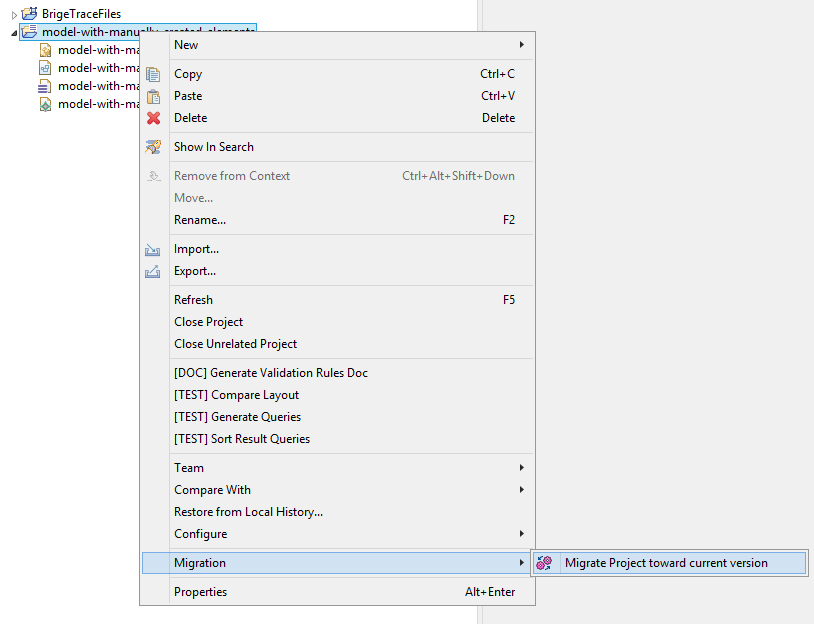
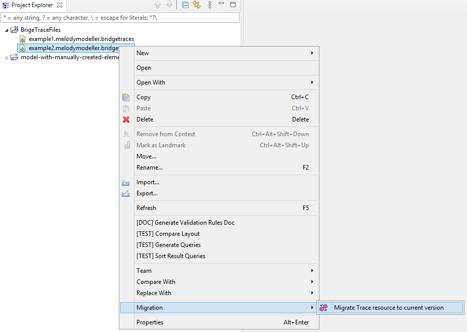

Migration procedure
As specified in the previous section, after a Reqif import a new
file .bridgetraces is created aside the .capella file which is used
for successive imports. Models that have been created in previous
versions of Capella need to be migrated for this version, including
the .bridgetraces file.
- If the .bridgetraces file is present in your Capella project,
it will be automatically migrated during the migration procedure. For
more details regarding the migration please of Capella projects
please consult Capella Guide / User Manual / First steps with
Capella / How to Migrate Capella Project
- 
- If the .bridgetraces file is present in elsewhere in your
workspace, you can migrate them independently by doing Right
Click / Migration / Migrate Trace resource to current version
- 